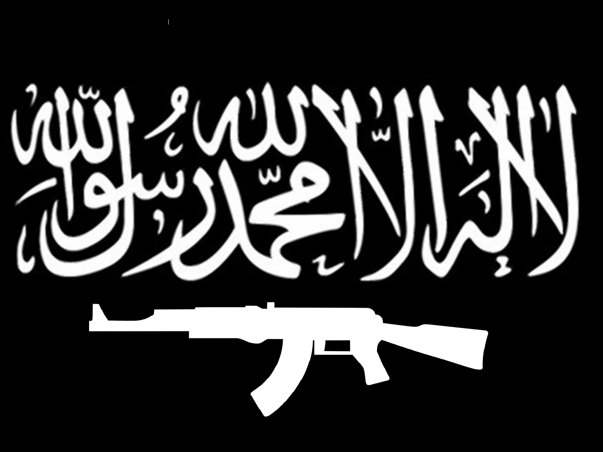

The New World Order
This QAnon phenomenon is remarkably disconcerting, and some of the symbolism that made its way into the Capitol is an example of how this is a unifying force for our most extreme ideologies, and that it has forced its way into our normal discourse. It is even more concerning that while those that believe in these conspiracy theories, believe them intensely; while those who do not, think them the complete nonsense that they are, and so do not engage in it in any serious way. So these ideas can perpetuate, slowly (or rapidly) increasing their influence relatively unchecked. I’m afraid it might be time that we need to care a little more about it.
Among the iconography on display at the Capitol riots were symbols of white supremacy movements. The Confederate Battle flag made it into Statuary Hall, which I don’t think has ever happened, at least not in such a visible way. But there were also the Auschwitz references, and the “6M…” nonsense. So not only did we see the white supremacy that was sort of born out of slavery and that particular evolution of racism, but we also saw the more neo-Nazi, fascist sort of white supremacy.
There was also boogaloo symbolism; a group that I don’t think even normally supports authority figures, but they support anarchy, so at least they know what to call that national disgrace.
The flag of Kekistan and the “Come and Take It” flag were prominent, and are evocative of the Nazi Reichskriegsflagge and the Ansar Ghazwat-ul-Hind flag, respectively. The former is obviously meant to be so, the latter, however, I don’t believe is actually intentional but is reminiscent nonetheless.


There is a lot to parse, but we need to take some time to understand, on a cultural and not simply a political level, what is happening. These groups, while having their fair share of overlapping demographics, do not normally meet and work together in the manner that we witnessed. But they have now united under one figurehead and have created an atmosphere that is very unfamiliar in American history – that of living under constant threat of terrorism. Are we headed for an arrangement that is more akin to that of Israel, in which a certain level of terrorism is almost to be expected?
This radical fringe movement has, alarmingly, gained such traction that some outspoken adherents of QAnon have been elected to national office. At the same time, the QAnon conspiracy theories that were born and promulgated in America are finding their way into the far-right groups in several European countries, Canada, Australia, Brazil, and others. After two decades of fighting against radicalized terrorism abroad, I fear that we are on the precipice of exporting our own.